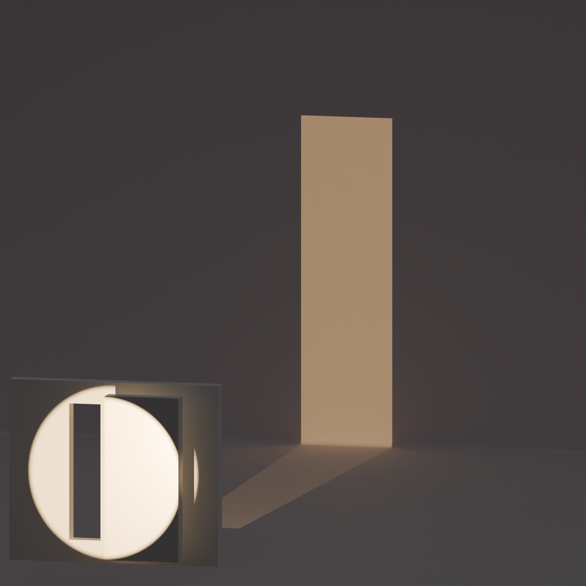
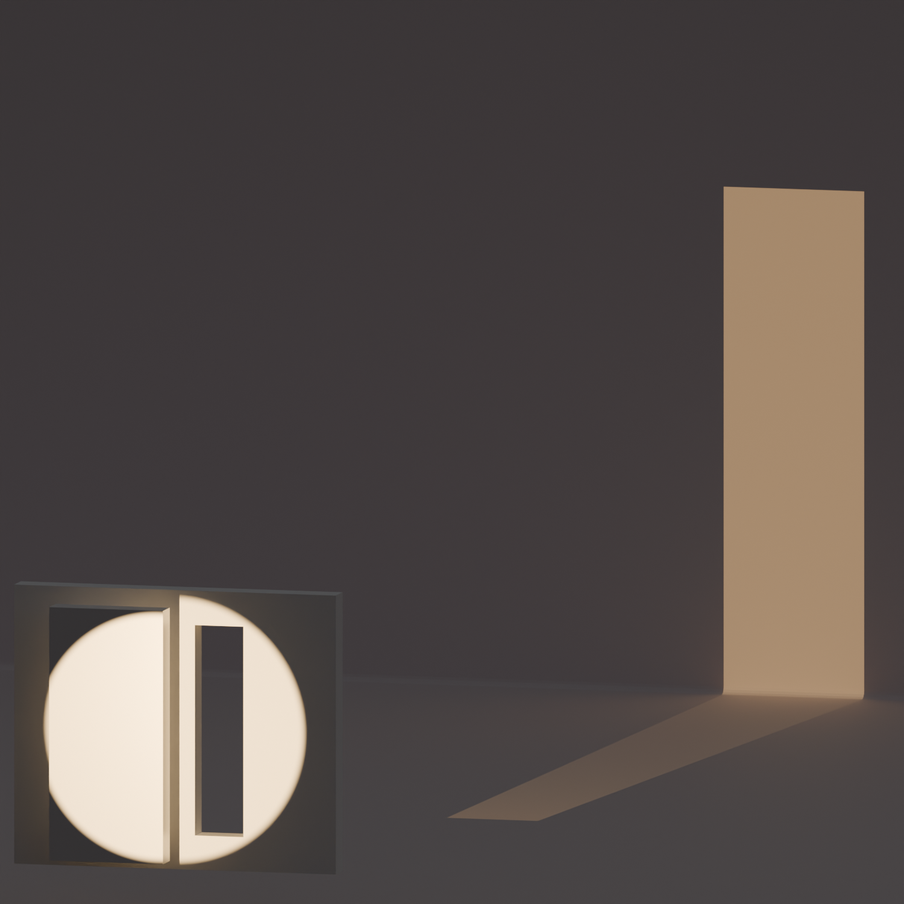
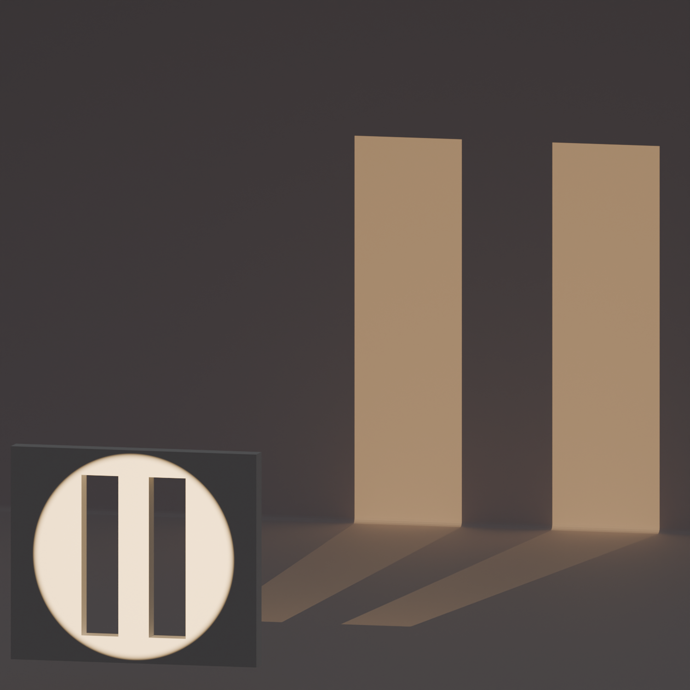
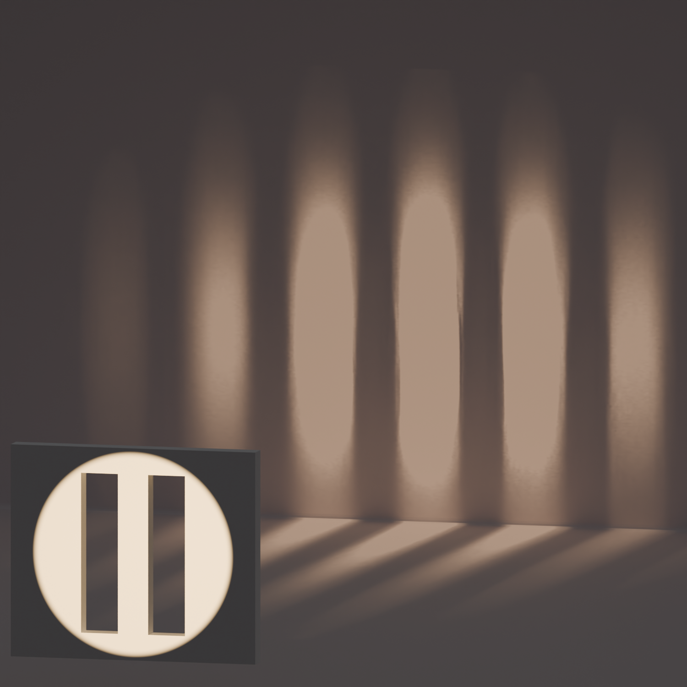
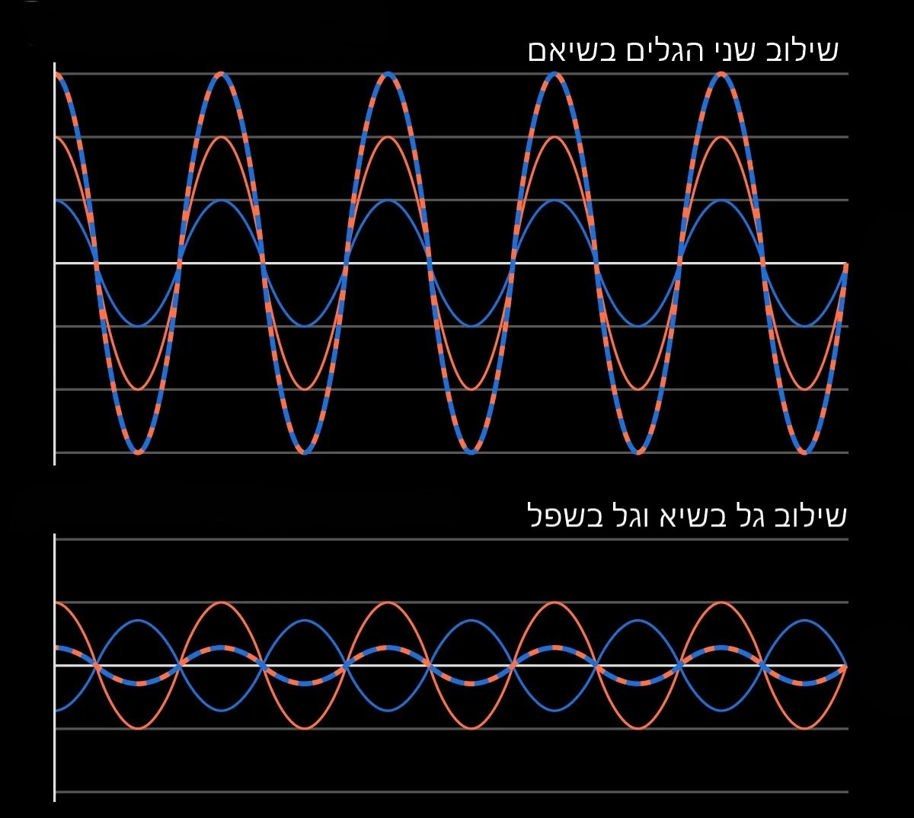
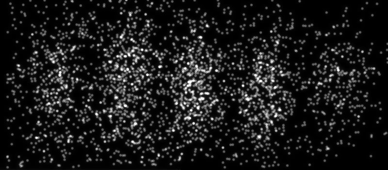
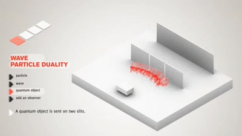

זריז מה מרכיב גם את המסך שאתם קוראים בו גם את הכיסא שאתם יושבים עליו וגם את הלכלוך במקלדת שהייתם צריכים לנקות כבר מזמן. אטומים, אטומים הם אבני היסוד שהחפצים שסובבים אותנו מורכבים מהם הידע על אטומים נפוץ אך לא כולם יוכלו להגיד ממה מורכב האור שסובב אותנו מורכב. זו שאלה מורכבת שמדענים גדולים כמו ניוטון והויגנס התווכחו עליה ובשביל לפתור אותה נצטרך לחזור אחורה בזמן.
המדען שפתר את התעלומה הזאת היה בעל ידע כה רב תחומי עד שהביוגרפיה שלו כונתה ״האיש האחרון שידע הכל״ למדען קראו טומאס יאנג. ב-1801 יאנג עיצב ניסוי פשוט למדי אבל שבפעם הראשונה הצליח להראות בדיוק ממה מורכב אור.
״ושהוא [הניסוי] מכיל בתוכו את הלב של מכניקת הקוונטים. במציאות, הוא מכיל את התעלומה היחידה.״ — ריצ'רד פיינמן
ניסוי שתי הסדקים
באותן שנים הוויכוח המדעי יכל להתפלג לשתיים. כאלה שהאמינו שאור מורכב מגל שיוצא ממקור האור וכאלה שהאמינו שהוא מורכב מהמון חלקיקים (כדורים) קטנים. בשביל ליישב את הוויכוח יאנג לקח שתי חריצים וכיוון אותם אל מול השמש. הוא כיסה רק את אחד החריצים ורק אה את הצורה של האור שפוגע במסך מאחור
לאחר מכן הוא החליף בין החריץ המכוסה לפתוח וקיבל את הצורה הבאה
עד כה לא בדיוק "הבן אדם האחרון שידע הכל". כל אחד יכל לנחש מה יקרה בניסוי ולכן לא יפתיע אותנו שכשהוא יוריד את הכיסוי נראה את שילוב שתי התוצאות הקודמות
אך כשהוא פתח את שני החריצים יאנג ראה על המסך צורה כזו
השם של הצורה הזאת ואיך שפיזיקאים יקראו לדבר שיאנג ראה על המסך זה צורת התעבכות של שתי גלים. במילים פשוטות זה אומר שהאור שעובר מחריץ אחד על האור שעובר מחריץ השני. ולכן לא נראה את שילוב שתי התוצאות הקודמות, אלה נראה נקודות בהירות כששני הגלים יגיעו בשיא הגל ויחזקו אחד את השני ונהקודות החשוכות יווצרו כשגל מחריץ אחד בשפלו הגל מהחריץ השני בשיאו ויבטלו אחד את השני.
אינשטיין מגיע להרוס הכל
כדבר שהפך כבר להרגלו אינשטיין ב-1921 מקבל פרס נובל על גילוי שהופך את הקונסזוס המדעי על ראשו. בלי להיכנס לפרטים הטכנים הוא הראה שהמהירות שאלקטרונים משתחררים ממתכת כשמכוונים עליה אור תלויה בצבע של האור ולא בעוצמה שלו. בעצם הוכיח שאור אינו רציף, אלא נפלט ונקלט בפקטות אנרגיה בדידות. פקטות אנרגיה אלו כונו על ידו פוטונים.
בעצם יש לנו קונפליקט בין שני הניסויים כאשר אחד מראה תוצאות שנראות לנו מנוגדות לחלוטין לתוצאות הניסוי השני. אחד תומך במודל של גלים בזמן שהשני תומך במודל של חלקיקים.
בכדי לפתור את הקונפליקט פיזיקאים ניסו להבין איך לקבל את צורת ההתאבכות שראינו מקודם. הם שיערו שהפוטונים עוברים את החריצים ואז מתנגשים או משפיעים אחד על השני בצורה שגורמת להם לייצר את ההתאבכות שראינו מקודם. ובכדי לבדוק את השערתם הם החליטו לשלוח פוטון בודד דרך החריצים בציפיה שההתעבכות שראו תעלם.
ניסוי שתי החריצים עם פוטונים בודדים
צוותי פיזיקאים ביצעו את הניסוי עם פוטונים בודדים ונתנו להם להצתבר ונחשו מה, אותה צורת התאבכות בדיוק נוצרה על המסך
אז מה זה אומר, אחד שלפעמים לא קל להיות פיזיקאי נסיוני ולספור 6235 חלקיקים שעברו דרך שתי חריצים במשך שעתיים, ושתיים שחלקיקים בודדים איכשהו מצליחים להתנהג כמו גל ולייצר צורת התאבכות. אם תחשבו על זה אבל לא יותר מידי תבינו שהחלקיק הבודד ההוא עבר מנקודה אחת לשניה בצורה שהצליח לבטל את עצמו כאילו היה גל. תוצאות הניסוי בילתי ניתנות לתפיסת האינטואיציה שלנו או במילותיו של אחד מאבות תאורית מכניקת הקוונטים
"לא רק שהיקום מוזר יותר ממה שאנחנו חושבים, הוא מוזר יותר ממה שאנחנו מסוגלים לחשוב" — ורנר היזנברג
חזרה להיגיון
עם השנים התפתחו אינטרפרטציות שונות במטרה להסביר את כל המוזרות שרואים בניסויים. כיום האינטרפרטציה המקובלת ביותר נקראת אינטרפרטציית קופנהגן שבא חלקיקים קוונטים מיוצגים על ידי גל הסתברות עד שהוא נמדד (לדוגמא המסך בניסוי שלנו) ואז גל ההסתברויות קורס לנקודה אחת בהתאם להסתברות הגל. בניסוי שלנו זה יראה ככה.
למצב שהחלקיקים נמצאים בו לפני שמודדים אותם קוראים סופרפוזיציה קוונטית כדי לתת שם לתופעה הזאת שאנחנו לא יכולים לתפוס.
חשוב להבין שהדרך שהחלקיקים פועלים נוגדת את האינטואיציה שלנו כי לעולם לא ראינו אף חפץ כמו כדור הופך לגל הסתברות. גם באינטרפרטציות ההמודרניות שלנו קיימות בעייות שעוד לא הצלחנו לפתור. בכל זאת אני מקווה שכמוני אתם תראו את היופי בנסיון הלא פוסק של המין שלנו להבין את היקום גם כשכל הסיכויים נגדנו.